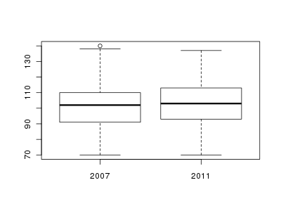

Rugby World Cup 2007–2011
Table of Contents
1 Źródlo danych
Pliki rwc_all_2007.cvs i rwc_all_2011.cvs zawierają – odpowiednio --
zestawienie zawodników uczestniczących w turniejach
o puchar świata w Rugby w roku 2007 oraz 2011.
Dane pochodzą ze strony http://www.rugbyworldcup.com/.
2 Lista zmiennych
Poszczególne kolumny w plikach rwc_all_2007.cvs i rwc_all_2011.cvs zawierają następujące dane:
- packid
- identyfikator drużyny
- id
- identyfikator zawodnika
- name
- imię i nazwisko zawodnika
- date
- rok urodzenia
- town
- miejsce urodzenia (nazwa miasta)
- cntry
- miejsce urodzenia (nazwa kraju)
- weight
- waga zawodnika (kg)
- height
- wzrost zawodnika (cm)
- played
- łączny czas gry w turnieju (min)
- lbc
- łączna liczba złamań linii obrony (line-breaks)
- pens
- karne (procent skuteczności, penalty goal success rate)
- conv
- podwyższenia (procent skuteczności, conversion success rate)
3 Przykład analizy z wykorzystaniem R
Wczytanie obu zbiorów:
rwc2007.all <- read.csv("rwc_all_2007.csv", sep = ';', header=T);
rwc2011.all <- read.csv("rwc_all_2011.csv", sep = ';', header=T);
Porównajmy masę ciała zawodników z obu turniejów, pomijając tych którzy łącznie grali w turnieju pół meczu i mniej (played <= 40):
rwc2007 <- subset (rwc2007.all, rwc2007.all$played > 40) rwc2011 <- subset (rwc2011.all, rwc2011.all$played > 40)
Policzmy średnią i pozostałe statystyki opisowe:
summary (rwc2007$weight) summary (rwc2011$weight)
Min. 1st Qu. Median Mean 3rd Qu. Max. 70.0 91.0 102.0 101.3 110.0 140.0 Min. 1st Qu. Median Mean 3rd Qu. Max. NA's 70.0 93.0 103.0 102.6 113.0 137.0 1.0
oraz przedstawmy masę ciała na wykresie pudełkowym (boxplot)
boxplot(rwc2007$weight, rwc2011$weight, names=c('2007', '2011'))

Zawodnicy w turnieju z roku 2011 są przeciętnie nieco ciężsi niż w roku 2007.